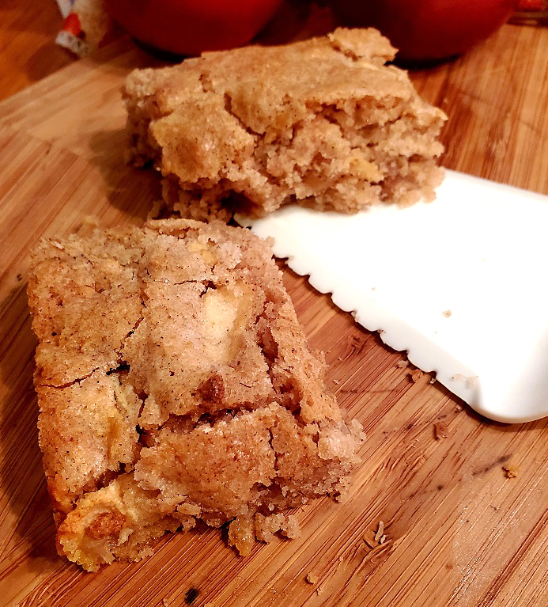

Apple Brownies

Description
This was my Mom's recipe. Easy and quick to make.
Apples and walnuts are packed into a cinnamon spiced
blonde brownie. Always a hit when I bring it to
parties. Very moist and great to make in the fall
when apples are plentiful.
Ingredients
- 1/2 cup butter, melted
- 1 cup white sugar
- 1 egg
- 3 medium apples- peeled, cored, and thinly sliced
- 1/2 cup chopped walnuts
- 1 cup all purpose flour
- 1/4 tsp. salt
- 1/2 tsp. baking powder
- 1/2 tsp. baking soda
- 1 tsp. ground cinnamon
Steps
- Preheat oven to 350 degrees F (175 degrees C).
Grease a 9x9 inch baking dish.
- In a large bowl, beat together the melted butter,
sugar, and egg until fluffy. Fold in the apples and
walnuts. In a separate bowl, sift together the
flour, salt, baking powder, baking soda, and cinnamon.
Stir the flour mixture into the wet mixture until just
blended. Spread the batter evenly in the prepared baking
dish.
- Bake 35 minutes in the preheated oven, or until a
toothpick inserted in the center comes out clean.